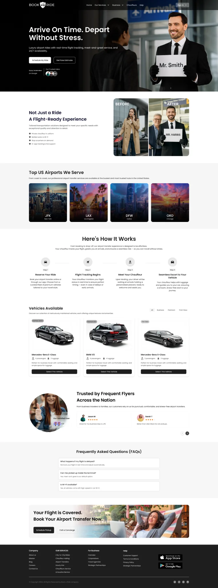
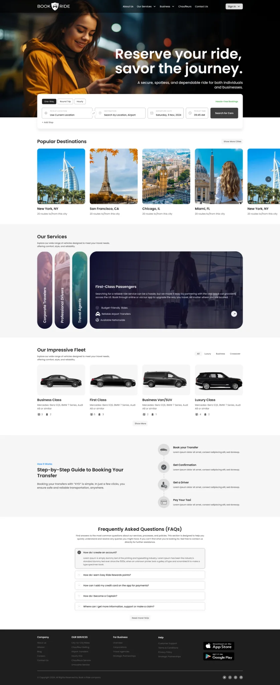
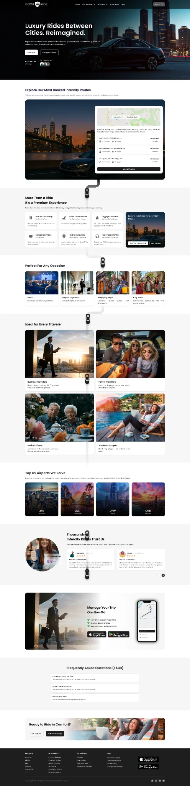
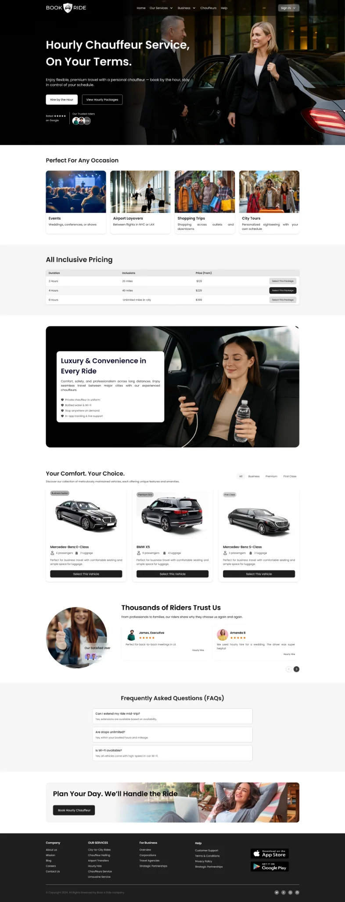
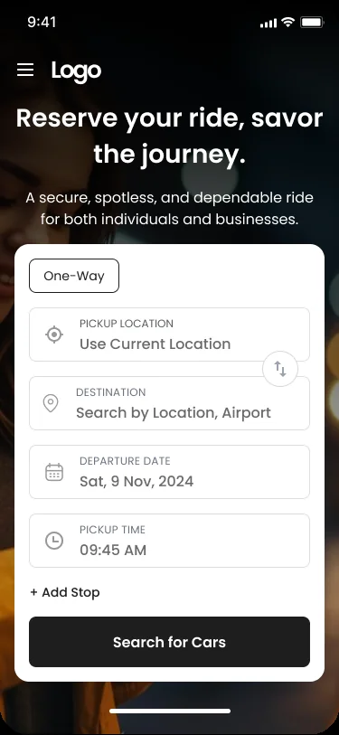
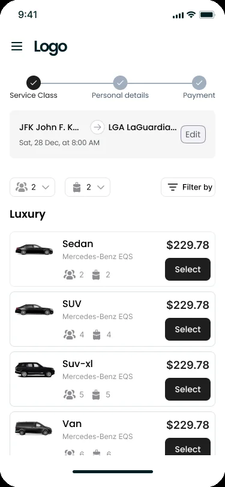
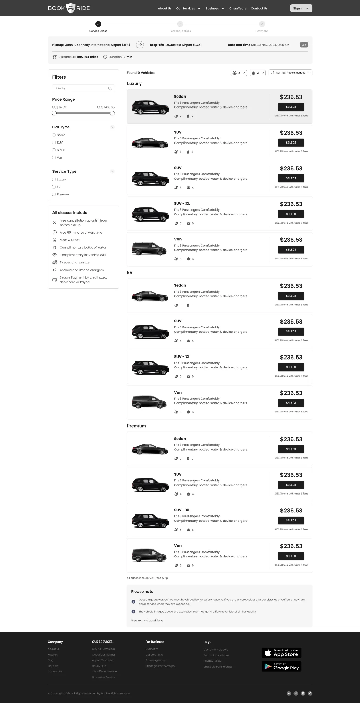

Different travel needs, one booking brand
The supplied experience presents airport transfers, city-to-city rides and hourly chauffeur hire as distinct service propositions within one brand.
PRODUCT DESIGN CASE STUDY / PREMIUM MOBILITY & CHAUFFEUR BOOKING
Designing a premium ride-booking experience across airport transfers, city-to-city journeys and hourly chauffeur hire.
Book A Ride is represented in the supplied screens as a premium mobility and chauffeur-booking experience for individuals and businesses. The interface supports three service contexts—airport transfers, city-to-city travel and hourly hire—and a booking journey that collects pickup, destination, date, time and stops before presenting vehicle classes and prices.

Project evidence: The uploaded archive contains seven UI exports: three service landing pages, a responsive homepage, a mobile booking form, and desktop/mobile vehicle results. It does not include research records, project brief, timeline, team composition, source Figma files, implementation records or business metrics. Confirm your exact role, ownership and delivery status before publishing.
A premium ride experience is more than a vehicle catalogue. Customers need to understand the service that fits their journey, provide accurate trip details and compare vehicle options before committing.
The supplied experience presents airport transfers, city-to-city rides and hourly chauffeur hire as distinct service propositions within one brand.
Structure the path from understanding the service to entering trip details, reviewing vehicle classes and progressing through booking steps.
Shape service landing pages, responsive homepage, pickup/destination form, date/time and stops, passenger/luggage controls, vehicle results and the booking progress indicator.
The supplied screens document the service propositions and key booking surfaces across desktop and mobile, including a vehicle-class comparison stage.
The product has to serve different journey types without confusing customers about what they are booking. The most important UX challenge is to translate a travel requirement into the right service, trip details and vehicle choice.
An airport transfer, intercity journey and hourly hire have different planning needs. Customers must recognize the right option before entering details.
Pickup, destination, date, time, additional stops, passenger count and luggage all affect the trip and vehicle selection.
Customers need a clear comparison of vehicle class, seating capacity, baggage capacity and fare before selecting a car.
Premium service promises—punctuality, meet-and-greet, flight tracking, chauffeur quality and availability—must be supported by clear terms and accurate operational delivery.
The three landing pages establish different travel propositions. A shared booking foundation can preserve consistency while adapting the fields and explanations to each service type.
The page positions premium airport rides around punctuality, flight tracking, meet-and-greet, 24/7 availability and airport-specific pickup expectations.
The page presents longer-distance travel between cities, destination discovery, service explanation and vehicle choice for point-to-point journeys.
The page positions a chauffeur service for customers who need a vehicle and driver for a selected duration rather than a single point-to-point trip.
Across service types, customers need to provide journey details, understand vehicle options and progress through a predictable booking sequence.
The service descriptions above are based on the supplied page content. Exact operational rules—airport waiting time, flight-delay handling, hourly minimums, mileage allowances, city boundaries and cancellation conditions—are not established by the screenshots and should be confirmed with the service owner.
MoSCoW clarifies the minimum experience needed to find a service and choose a car, while separating service enhancements and operational capabilities that require further validation.
Without these, customers cannot describe their journey or select an appropriate vehicle.
These features reduce uncertainty and help customers understand what the service includes.
Potential enhancements to research and sequence after the core booking process is dependable.
Proposed non-goals to protect the premium booking experience, not confirmed roadmap decisions.
MoSCoW status: This is a retrospective prioritization reconstructed from the visible services and booking fields. It is not claimed as an approved product backlog or stakeholder workshop outcome.
The archive contains screens, not user research artefacts. A defensible case study therefore documents the discovery questions and task hypotheses that should be tested, rather than inventing interviews, personas or survey findings.
Explore how customers distinguish airport transfers, city-to-city travel and hourly hire, and what information they need to choose the correct service.
Investigate how customers enter pickup, destination, additional stops, departure time, passengers and luggage—and which fields commonly cause errors.
Explore how customers trade off price, vehicle class, seating, luggage capacity, amenities, service quality and travel context.
| Observed UI evidence | UX interpretation | Design opportunity | Evidence status |
|---|---|---|---|
| Separate landing pages exist for airport, city-to-city and hourly hire. | Service intent is a primary decision, not merely a booking-form variation. | Make the differences between service types clear and expose the correct booking route. | Visible in archive |
| Mobile booking asks for pickup, destination, departure date, pickup time and add-stop. | Trip information needs to be collected in a clear order and should fit a small screen. | Use clear labels, location search, date/time pickers and progressive disclosure for stops. | Visible in archive |
| Vehicle results show class, model, passenger/bag capacity and fare. | Customers compare suitability and price, not just vehicle appearance. | Standardize comparison fields and make capacity legible. | Visible in archive |
| Desktop results include filters and a long car list. | Customers may need to narrow a large result set before comparing. | Make filter categories, applied states and sorting understandable. | Visible in archive |
| Mobile results show a three-step progress indicator: Service Class, Personal details, Payment. | The booking is structured as a multi-step checkout. | Show progress, preserve entered trip details and summarize before payment. | Visible in archive |
The service set suggests three task-based archetypes. These are proto-archetypes derived from the product's service contexts—not demographic personas or completed research findings.
Context: needs a dependable pickup around a flight.
“I need to know my ride will be there when I land, and I want the pickup to be straightforward.”JTBD
When I travel to or from an airport, help me arrange a suitable vehicle with clear pickup details and service expectations.
Design opportunityFlight-related fields, pickup instructions, meet-and-greet details, waiting-time policy and clear date/time.
Context: needs point-to-point travel between cities.
“Help me compare the right vehicle and price for a longer journey.”JTBD
When I plan an intercity trip, help me enter the route, understand the vehicle options and compare total fare and capacity.
Design opportunityClear route summary, distance-aware fare explanation, vehicle comparison and transparent inclusions.
Context: needs a chauffeur for multiple stops or a time block.
“I have several places to visit. I need a driver and car available for the time I choose.”JTBD
When I need multiple stops or flexible travel, help me choose an hourly service and understand duration and usage terms.
Design opportunityDuration selection, stop management, included distance/time and overtime rules.
Validate these archetypes with individual travelers, corporate bookers, executive assistants and operations teams. Their priorities may differ substantially.
The journey connects service selection, trip configuration, vehicle comparison and booking progression. Friction and opportunities are hypotheses to validate; the screens establish the actions and interface states.
The archive shows a progress indicator through Payment but does not include personal-details or payment screens. Those downstream steps are part of the proposed end-to-end journey, not verified delivered UI.
The information architecture can use the three service types as clear entry points, then converge on a shared trip configuration and vehicle selection model, with service-specific fields when required.
IA boundary: This is an experience-level structure inferred from the service pages and booking form. It is not a complete sitemap. Confirm account, quote, reservation management, corporate booking and post-booking support destinations against the actual product.
The flows show the shared booking model and the unique decisions that distinguish the three service contexts.
Understand service benefits.
Choose airport and address.
Set arrival or departure details.
Review capacity and price.
Complete booking steps.
Flight number, terminal, delay handling, waiting time and meet-and-greet confirmation should be specified if the service operationally supports them.
Understand route service.
Enter origin and destination.
Set travel time.
Review vehicle options.
Continue booking.
Clarify one-way vs return trip, route distance, included stops, tolls, taxes, driver allowance and cancellation terms before quote acceptance.
Understand flexible use.
Choose starting location.
Set hire period and stops.
Compare capacity and rate.
Confirm service terms.
Duration picker, included mileage, overtime charges, inter-stop waiting and early termination rules need explicit design and business confirmation.
Keep route and time visible.
Narrow relevant classes.
Review model, seats and bags.
Confirm fare and class.
Continue to checkout.
The mobile results screen shows Service Class → Personal details → Payment progress, with passenger and luggage controls and vehicle selection cards.
A strong case study makes the logic behind the interface visible. These decisions are based on the supplied screen design and framed as design rationale, not claimed user-tested findings.
| Decision | Customer need | Design response visible in screens | Trade-off / validation need |
|---|---|---|---|
| Separate service landing pages | Understand whether the journey is airport, intercity or hourly. | Dedicated pages explain each service proposition with tailored imagery and content. | Maintain distinct value propositions without fragmenting the brand or confusing navigation. |
| Lead with trip details on mobile | Provide required booking information quickly. | Mobile form groups pickup, destination, date, time and add-stop in one prominent card. | Long forms can feel dense; validate field order, autocomplete and keyboard behavior. |
| Allow additional stops | Support journeys that are not a simple A-to-B transfer. | “Add Stop” appears beneath pickup, destination, date and time. | Define maximum stops, stop ordering, extra charges and route recalculation. |
| Ask for passenger and luggage counts | Choose a vehicle that fits the party and baggage. | Mobile results exposes passenger and luggage selectors before vehicle selection. | Capacity rules should be explicit; avoid allowing selection of an unsuitable vehicle. |
| Show booking progress | Understand how many steps remain. | Mobile results displays Service Class, Personal details and Payment stages. | Keep progress accurate, persist entered data and allow safe back navigation. |
| Use comparable vehicle cards | Compare car class, model, passenger capacity, baggage and price. | Results cards show vehicle type, model, capacity icons and a fare with Select action. | Make fare inclusions and differences between classes clear, not just the price. |
| Support filters on desktop | Narrow a large vehicle set. | Desktop results includes a filter sidebar beside the list of vehicles. | On mobile, filters need a compact sheet and clear applied-filter feedback. |
The supplied screens are presented in a task-oriented sequence. The service landing pages explain the offers; the booking surfaces show how customers configure a trip and compare vehicles.

The homepage combines a premium chauffeur proposition with a booking form, popular destinations, service explanations, vehicle examples, social proof and FAQs. The key UX challenge is to balance inspiration and trust content with a fast path to starting a booking.
The airport page emphasizes punctuality, flight tracking, meet-and-greet and availability. Any claims about tracking or wait-time coverage should be matched to real operating policies.


Dedicated pages let customers understand the difference between a point-to-point city journey and a time-based chauffeur booking. Service rules, minimum duration, mileage and included waiting time should be available before checkout.

The mobile booking form keeps the essential trip fields in a single card: trip type, pickup, destination, departure date and pickup time, with an option to add a stop. This is the most direct expression of the booking entry task.


The mobile results view shows the booking stages and vehicle cards with passenger/bag capacity and fare. The desktop results layout adds a filter rail and a longer comparison list. The fare displayed in the screenshots is sample UI content, not verified live pricing.
The supplied screens share a premium, high-contrast visual direction: black and charcoal surfaces, white typography, restrained neutral borders and warm photographic imagery. The archive does not include a design-system source board, so these are visual patterns inferred from the screens.
Observed direction: deep black/charcoal, white, gray and restrained warm neutral tones. Exact source tokens should be confirmed in Figma; these swatches are illustrative samples.
Large hero messaging sets the premium tone; compact labels and form metadata support quick scanning of trip details and vehicle information.
Marketing pages use cinematic dark photography and high-contrast typography, while the mobile booking form and results use bright cards for legibility and task focus.
| Component family | Variants / states to define | Behavior contract | Evidence in screens |
|---|---|---|---|
| Service navigation | Default · active · mobile menu | Make Airport, City-to-city and Hourly hire destinations clear. | Marketing pages |
| Trip type selector | One-way · return · hourly (where applicable) | Update the required trip fields when service type changes. | Mobile booking |
| Location autocomplete | Empty · typing · suggestions · selected · error | Support clear labels, recent selections and location disambiguation. | Mobile booking |
| Date / time picker | Default · selected · unavailable · invalid | Respect service hours, date/time zones and lead-time rules. | Mobile booking |
| Passenger / luggage selector | Default · incremented · limit reached | Prevent counts exceeding the selected vehicle's capacity. | Mobile results |
| Vehicle card | Default · selected · unavailable | Show class, model, seats, bags, fare and inclusions consistently. | Vehicle results |
| Filter control | Closed · open · applied · cleared | Expose applied filters and provide reset behavior. | Desktop results |
| Booking progress | Current · complete · error | Keep progress accurate and preserve state when navigating back. | Mobile results |
Design-system evidence boundary: The screenshots support a consistent visual direction and a component inventory. They do not prove an implemented Figma library, exported variables, coded React component package, Storybook or versioning process. Add source Figma evidence if you personally built and maintained those artefacts.
Travel booking often happens quickly and on mobile. Customers need readable form labels, clear location values, precise passenger/luggage controls and transparent vehicle details.
Do not rely only on placeholders. Maintain clear focus states, input errors, tap target size and predictable keyboard behavior for location, date and time fields.
Use text and icons together, show the vehicle's capacity and prevent a party configuration that exceeds available seats or baggage space.
Separate base fare, taxes, tolls, waiting time, extras and discounts where they apply. Confirm when a price is indicative versus final.
On smaller screens, preserve trip summary, step progress, selected service and chosen vehicle without forcing users to remember previous screens.
These are design and QA requirements. The archive does not include an accessibility audit, responsive test report or proof of WCAG conformance.
The most important validation tasks are choosing the right service, entering trip details, selecting a suitable car and understanding what the displayed fare includes.
| Test scenario | What to observe | Success signal | Priority |
|---|---|---|---|
| Choose a service type | Can customers distinguish airport, city-to-city and hourly hire? | Selects the service that matches the scenario and explains why. | Critical |
| Configure a trip | Can customers enter pickup, destination, date, time and stops? | Completes fields without avoidable errors or moderator help. | Critical |
| Set passenger and luggage counts | Do customers understand capacity values and the effect on vehicle choice? | Selects a vehicle that accommodates the party and bags. | Critical |
| Compare vehicle options | Can customers explain the differences in class, capacity, fare and inclusions? | Selects an appropriate car with a clear rationale. | High |
| Continue the booking steps | Does the progress indicator help users understand what remains? | Completes the next stage without losing trip data. | High |
| Review final fare | Can customers identify the final payable total and included/excluded charges? | No unexpected price surprise at payment. | Critical |
Measure service-selection accuracy, form completion, field correction, filter use, vehicle comparison confidence and booking-step abandonment.
Track service landing-to-search conversion, search-to-car selection, checkout completion, booking errors, payment failure, cancellation and support contact reasons.
Results boundary: The archive contains no test results or operational analytics. Do not claim conversion lift, faster booking or reduced abandonment without measured evidence and a clear baseline.
The supplied screens document a multi-service chauffeur-booking experience with dedicated service landing pages and shared mobile/desktop vehicle-selection patterns.
DESIGN CONTRIBUTION
Structured airport transfers, city-to-city and hourly hire as distinct service contexts within one brand.
Designed a mobile-first form for pickup, destination, date, time and additional stops.
Made passenger and luggage counts visible as inputs to vehicle selection.
Presented car classes, model names, passenger/bag capacity and fare in desktop and mobile results.
Used a three-step Service Class, Personal details and Payment progress indicator in the mobile results flow.
Connected responsive marketing pages, mobile booking and desktop vehicle results under a consistent visual direction.
Premium mobility is a service-design problem as much as an interface-design problem. The customer is not buying a car card; they are buying confidence that the journey will happen as expected. Service definitions, pickup instructions, trip details, vehicle capacity, fare transparency and operational policies all contribute to that confidence. The next design iteration should validate each service's rules with customers and the operations team, then test the booking funnel end to end.